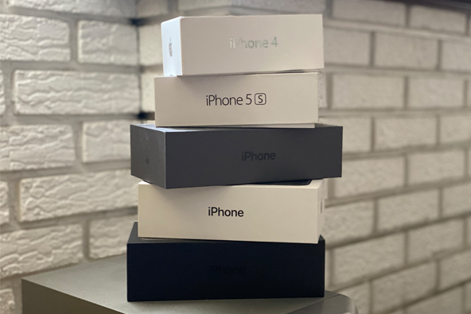

Experience
I was fifteen years old when the first iPhone was launched. During its time, this was one of the most advanced smartphones ever created. I wanted to trade my LG Rumor for the iPhone. However, the cost of it was five hundred dollars. I did not have any money since I didn't have a job during high school. I remember there were long lines to purchase the iPhone in the country. Hundreds of people swarmed to the Apple Stores and ATT stores to acquire the first iPhone.
I waited until the end of senior year of high school, to get my hands on the iPhone. My dad gifted me an iPhone 4 for graduation. I was excited and ready to explore my first iPhone, downloaded all my apps and games, started facetiming my friends. The technology was on my palm of my hands. I had my iPhone 4 for about two years until it got slow. I replaced it with the iPhone 5S, which is my favorite iPhone of all time. Once I got a job, I was able to upgrade my iPhone every year.
Currently, I have the latest iPhone 11 Pro Max. It has a big screen and amazing battery life. My iPhone is capable of taking amazing pictures during the day and night. I think it has helped to ease my life a bit since I can do many things with my iPhone: pay bills, order food, register for classes, video chat with friends, rent a movie, and more. I don't plan to switch to another smartphone brand because I am already used to the iPhone ecosystem, plus is easier to talk to my friends and family since they have an iPhone.
I use several applications daily. Many of these applications have replaced some errands such as going to the bank and pay bills in store. I use apps for social media, gaming, shopping, school, streaming, and exercising. Here are some of the apps I use daily.
I use this app to send 5-second videos to my friends. I can also make group chats and share funny videos and memes. There are filters and location stamps for pictures. Snapchat is one of the two social media apps I have on my phone, the other one being Instagram.
If I want to catch up on news about a certain topic, or perhaps ask a question then I use Reddit. It is a web forum with millions of users actively participating. Many people use Reddit to share stories, news, memes, and many other things. NJIT has an unofficial Reddit page where students post about things that happen around campus.
This app comes in handy when I am at work. I can order any type of food and deliver it to my location. I think all the restaurants in my town are on the app. This is a new way to order lunch or dinner at any time of the day. Uber Eats also offers discounts that make you order even more food.
I have several smart light bulbs in my house and the best way to manage them is by using the Google Home App. The App allows you to control many smart devices by using your voices. I can tell the app to dim my lights, play some music, and even turn on my Roomba vacuum.
During class registration, I want to enroll in the best class section possible. With the Coursicle app, I can track many class sections, I get a notification whenever a section is open or closed, giving me more chances to enroll in the class before someone else.